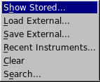
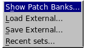
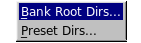
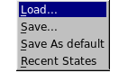
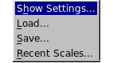
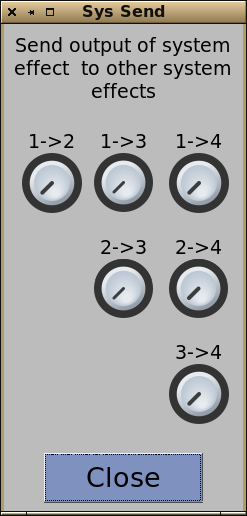
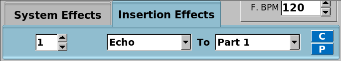
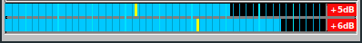

This is the starting point for all work with Yoshimi. Referring to the image on the index page, we describe the controls and navigation routes.
Along the top is a fairly standard menu bar. Either clicking on one of the names, or holding down 'Alt' and pressing the key for the underscored letter will get you directly to that menu which will then open, closing any others that might already be open. This again is standard behaviour.
All of these are shown below as they would appear when selected.






As you can see, the majority of the menu entries are links that open other windows to perform the associated function.
Back to top
Below these are the top level buttons and controls. Referring to the main window...
Stop is the usual panic button. It cancels all sounding notes. However, while it does so extremely fast, it is actually a rapid fade down. This is so there isn't a sharp 'edge' that would be quite unpleasant if you are monitoring on headphones and might be damaging to some audio systems.
Reset Stops all sound (as above) and also clears almost all settings, taking you back to the startup condition. The one exception is Midi Learn. If you want to clear this as well, you have to hold down the Ctrl key at the same time.
Stereo This button switches between stereo and mono (when the color changes to red and the word becomes 'Mono'). It only affects the output pair, and is never saved. It switches virtually silently and is very useful for checking how the music would sound on a mono system.
Mixer Panel simply opens the mixer window, described later in Part.
Virtual keyboard opens the window displaying this in the same way as a first time startup.
Midi Learn opens the window for loading, saving and editing these learned controls.
Vectors also opens another window, this time for combined control of up to four parts.
Undo reverts the last control that was changed.
Redo re-applies the most recent 'Undo' action.
The initial Undo learning process tries to avoid unnecessary storage in two ways.
The first is by only storing the last change of a control until either a note has been played, or a different control has been changed.
The second is by storing some settings as groups. An example is the resonance window. If you select a random graph, try it, then set another one to try, after that an undo will restore the entire previous graph. However if you manually drag elements of the graph, the graph points will be stored individually.
There are some limitations to 'Undo' and 'Redo'. Loading a new part, performing a master reset, etc. will clear the lists. It would not be sensible to try to modify elements that might no longer exist. Also some of the waveform controls make such extreme changes that attempting to store, then re-apply them would be prohibitively disruptive.
Detune provides a very fine detune of the entire synth so you can match the pitch to any other synth or sound source you might be using.
Volume is the master volume control for the main audio output pair. It doesn't affect any individual part outputs you might have set (if using Jack audio, or LV2).
Key Shift allows you to step the overall key up or down in semitone steps as much as three octaves.
F. BPM This provides a reference MIDI clock within Yoshimi that will be used if there is none being sent from your external keyboard/controller.
Next there is a short tabbed insert. By default this shows the System effects. These are applied to the whole of the main Left/Right audio outputs and immediately below it is the currently selected one. These are described in Effects. The sources for system effects are shown at the bottom of the main window, and are from the output of Parts.
The spinbox selects the effect being managed. You can have up to four of these, and the menu selects which actual effect will be used.
The On checkbox allows you to temporarily disable the effect (this setting is not saved). This is necessary, as if you set it back to 'No Effect' all settings you may have changed will be lost.

After this there is the Send To button. This opens a small window so that you can cascade varying amounts of the effects if you want to.
This provides the ability to form very complex effect chains. With all controls at zero, each effect passes its output direct to the main L/R pair, but if (for example) you set the control marked 1->3; about halfway, that effect will be combined with the normal input to effect 3 as well as being sent out directly.
Similarly, this combined effect can then be passed on to effect 4 with the 3->4; control, and effect 4 could also be getting some from effect 2 via 2->4;.

This next view shows just the Insertion effects tab. The actual effects are, of course, from the same set.
Here, you can have up to eight effects, and they can be sent to any individual part or the main outputs. Again, you have a menu to select the wanted effect.
There is no need of an On checkbox for insertion effects because you can temporarily disable an effect simply by setting its destination to 'off'.
Most of the lower half of this window is associated with the Part context, and is described in detail there.
At the very bottom is the Left/Right VU display for the main audio output.

The VU display will indicate if there is overload (aka clipping) by highlighting the number in red. In case of overload you might need to reduce the master volume or the volume of a Part which is too loud. You can reset the overload indicator by simply clicking on it.
The blue horizontal bars are the peak levels, rising immediately but falling back slowly to give you time to see them clearly. The yellow lines are relatively slow RMS levels. The fine vertical divisions are 1dB steps, and the thickest ones 10dB.
Next (Instrument Banks)
Back to buttons
Parts and Channels
Back to top